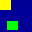

<!DOCTYPE HTML PUBLIC "-//W3C//DTD HTML 3.2//EN">
<HTML>
<HEAD>
	<LINK REV="Made" HREF="mailto:ain@da.airnet.ne.jp">
	<LINK REL="Contents" HREF="./index.html">
	<META HTTP-EQUIV="Content-Type" CONTENT="text/html; charset=iso-2022-jp">
	<META NAME="Author" CONTENT="Seiji Ainoguchi">
	<META NAME="Subject" CONTENT="CNxTrackingSprite">
	<TITLE>CNxTrackingSprite $B%/%i%9(B</TITLE>
</HEAD>
<BODY>
<A NAME="top"><H1>CNxTrackingSprite $B%/%i%9(B</H1></A>

<PRE>
<A HREF="CNxSprite.html">CNxSprite</A>
  |
  +--<STRONG>CNxTrackingSprite</STRONG>
</PRE>

<A HREF="#summary">$B35MW(B</A><BR>
<A HREF="#toplevelsprite">$B:G>e0L%9%W%i%$%H$K$D$$$F(B</A><BR>
<A HREF="#member">$B%/%i%9%a%s%P(B</A><BR>

<A NAME="summary"><H2>$B35MW(B</H2></A>
<P>$B!!(BCNxTrackingSprite $B$O!"(B<A HREF="CNxSprite.html">CNxSprite</A> $B$NGI@8%/%i%9$G$9!#Cj>]%/%i%9$G$"$k$?$a!"(BCNxTrackingSprite $B%/%i%9$N%*%V%8%'%/%H$r9=C[$9$k;v$O$G$-$;$s!#I,$:GI@8%/%i%9$r:n@.$7$F2<$5$$!#(BCNxTrackingSprite $B$NGI@8%/%i%9$K$O!"(B<A HREF="CNxWindow.html">CNxWindow</A> $B%/%i%9$,$"$j$^$9!#(B</P>

<P>$B!!(BCNxTrackingSprite $B%/%i%9$O!"DL>o:G>e0L%9%W%i%$%H$H$7$F?6$kIq$$!":9J,DI@W(B(Differential Tracking)$B$H$$$&5!G=$,$"$j$^$9!#:9J,DI@W$H$O!"?F%9%W%i%$%H$,;R%9%W%i%$%H$N0\F0$rDI@W4IM}$9$k;v$G!"JQ2=$7$?:G>/$N6k7A$N$_$N:FIA2h$r2DG=$H$9$k5!G=$G$9!#(B</P>
<P>$B!!0J2<$N?^$O!":9J,DI@W$NF0:n$r<($7$?$b$N$G$9!#GX7J$N@D$O?F%9%W%i%$%H!"2+?'$HNP$O;R%9%W%i%$%H$H$7$^$9!#(B</P>
<CENTER>
<TABLE BORDER>
<TR><TH>$B0\F0A0(B</TH><TH>$B0\F08e(B</TH><TH>(a)</TH><TH>(b)</TH></TR>
<TR><TD></TD><TD></TD><TD></TD><TD></TD></TR>
</TABLE>
</CENTER>
<P>$B!!:#2s$NIA2h$G2+?'$N%9%W%i%$%H$O1&2<$X!"NP?'$N%9%W%i%$%H$O1&>e$X$=$l$>$l0\F0$7$?$H$7$^$9!#(B</P>
<P>$B!!!V0\F0!W$G$9$+$i!"A02s$N:/@W$O>C5n$5$l$J$1$l$P$J$j$^$;$s!#>C5n$;$:$KC1=c$K=E$M$k$H!"(B(a) $B$NMM$K$J$j$^$9!#0lEYA4$F$N%9%W%i%$%H$r>C5n$7$F:FIA2h$7$F$7$^$&$H$$$&J}K!$b$"$j$^$9$,!":9J,DI@W$G$O0\F0$K$h$C$F:FIA2h$,I,MW$JHO0O$N$_$r3d$j=P$7!"$=$N6k7A$@$1$rIA2h$7$^$9!#>e$N?^$G:FIA2h$,I,MW$J6k7A$r<($9$H(B (b) $B$K$J$j$^$9!#$3$NNc$G$O(B (a) $B$HA4$/F1$87k2L$K$J$j$^$9$,!"A4BN:FIA2h$9$k$h$j$b>.$5$$HO0O$G:Q$`$3$H$,J,$+$j$^$9!#>e$N?^$N?F%9%W%i%$%H$O(B CNxTrackingSprite $B<+?H$r<($7$F$$$^$9$,!";R%9%W%i%$%H$,(B CNxTrackingSprite $B$ND>B0$N;R$G$J$/$H$b!":G>e0L%9%W%i%$%H$,(B CNxTrackingSprite $B$G$"$l$P!":9J,DI@W$OM-8z$G$9!#(B</P>

<P>$B!!:9J,DI@W$r;HMQ$9$k$HKX$I$N>l9g!"IA2h$N%Q%U%)!<%^%s%9$r8~>e$G$-$^$9!#$7$+$7$J$,$i!":FIA2h$5$l$k6k7A$,>.$5$/J,CG$5$l$F$$$k$H!"%/%j%C%W$N%*!<%P!<%X%C%I$,A}2C$7$F5U$K%Q%U%)!<%^%s%9$,Dc2<$9$k>l9g$b$"$j$^$9!#$^$?!":9J,DI@W$r9T$&0Y$K!"?F%9%W%i%$%H$NBg$-$5$K1~$8$?%a%b%j$,I,MW$G$9!#$3$N0Y!":9J,DI@W5!G=$O>u67$K1~$8$FL58z$K$9$k;v$,$G$-$^$9(B(CNxTrackingSprite $B%/%i%9$N%G%U%)%k%HF0:n$G$OL58z$K$J$C$F$$$^$9(B)$B!#:9J,DI@W5!G=$NM-8z$HL58z$r@Z$jBX$($k$K$O!"(B<A HREF="#member.EnableTracking">CNxTrackingSprite::EnableTracking()</A> $B4X?t$r;HMQ$7$^$9!#Kh2sA4BN$,L58z2=$5$l$kMM$J>l9g!":9J,DI@W$rL58z$K$7$?J}$,NI$$%Q%U%)!<%^%s%9$rF@$i$l$k;v$,$"$j$^$9!#(B</P>

<P>$B!!DL>o!":9J,DI@W$O%T%/%;%kC10L$G$O$J$/!"$"$i$+$8$a7h$a$i$l$?%V%m%C%/C10L$G9T$o$l$^$9!#$3$N%V%m%C%/$NBg$-$5$O!"(B<A HREF="#member.SetTrackingUnit">CNxTrackingSprite::SetTrackingUnit()</A> $B4X?t$G@_Dj$G$-$^$9$,!"(B2 $B$N(B <EM>n</EM> $B>hC10L$G$J$/$O$J$j$^$;$s(B($B$?$@$7:G>.$O(B 1)$B!#C10L$r>.$5$/$9$k$H!"L5BL$JIA2hNN0h$r8:$i$9;v$,$G$-$^$9$,!":9J,DI@W$N>uBV$r5-21$9$k0Y$N%a%b%j$rB?$/>CHq$7$^$9!#$^$?NN0h$,:YJ,2=$5$l$F$7$^$&;v$K$h$C$F!"%/%j%C%W$N%*!<%P!<%X%C%I$,A}2C$7$^$9(B($BFC$K%9%W%i%$%H$,B?$$>l9g$O82Cx$K8=$l$^$9(B)$B!#5U$KC10L$rBg$-$/$9$k$H!"L5BL$JIA2hNN0h$,A}2C$9$kBe$o$j$K!"%a%b%j>CHqNL$H%/%j%C%W$N%*!<%P!<%X%C%I$O>/$J$/$J$j$^$9!#(B<A HREF="#member.GetTrackingUnit">CNxTrackingSprite::GetTrackingUnit()</A> $B4X?t$K$h$C$F!"8=:_$N:9J,DI@WC10L$r<hF@$G$-$^$9!#(B</P>

<P>$B!!:9J,DI@W$N:GE,$JC10L$O%"%W%j%1!<%7%g%s$NIA2hFbMF$K$h$C$F0[$J$j$^$9(B($B%G%U%)%k%H@_Dj$O(B 32x8 $B$G$9(B)$B!#%"%W%j%1!<%7%g%s$NIA2hFbMF$K1~$8$FD4@0$9$k$H!"$h$jNI$$%Q%U%)!<%^%s%9$rF@$k;v$,$G$-$^$9!#Nc$($P!"%9%W%i%$%H$,Hf3SE*>/$J$$>l9g!"%/%j%C%W$N%*!<%P!<%X%C%I$OA3DxLdBj$K$O$J$j$^$;$s$N$G!"C10L$r>.$5$/$7$^$9!#5U$K%9%W%i%$%H$,B?$$>l9g$O!"%/%j%C%W$N%*!<%P!<%X%C%I$rM^$($k0Y$K!"C10L$rBg$-$/$9$k$HNI$$$G$7$g$&(B($B$?$@$7!"$"$^$j$K%9%W%i%$%H$,B?$$>l9g!":9J,DI@W$=$N$b$N$rL58z$K$7$?J}$,NI$$>l9g$b$"$j$^$9(B)$B!#(B</P>

<P>$B!!:9J,$r99?7$9$k$K$O!"(B<A HREF="#member.Refresh">CNxTrackingSprite::Refresh()</A> $B4X?t$r8F$S=P$7$^$9!#$3$N4X?t$O!":FIA2h$,I,MW$J6k7A$rNs5s$7$F(B <A HREF="#member.RefreshRect">CNxTrackingSprite::RefreshRect()</A> $B4X?t$XEO$7$^$9!#$J$*!"(BCNxTrackingSprite::RefreshRect() $B$O=c?h2>A[4V?t$G$9!#(B</P>

<P>$B!!(BCNxTrackingSprite $B%/%i%9$G$O!"IA2h%U%l!<%`?t$r%+%&%s%H$7$F$*$j!"I,MW$G$"$l$P(B<A HREF="#member.GetFPS">CNxTrackingSprite::GetFPS()</A> $B4X?t$G<hF@$G$-$^$9!#(B</P>

<A HREF="#top">$B%Z!<%8$N:G=i(B</A>&nbsp;/&nbsp;<A HREF="classes.html">NxDraw $B%i%$%V%i%j(B $B%/%i%93,AX?^(B</A>
<HR>

<A NAME="member"><H2>$B%/%i%9%a%s%P(B</H2></A>
<A HREF="#construct">$B9=C[!">CLG(B</A><BR>
<A HREF="#affection">$BB0@-(B</A><BR>
<A HREF="#override">$B%*!<%P!<%i%$%I2DG=$J4X?t(B</A><BR>

<A NAME="construct"><P><FONT SIZE=+1>$B9=C[!">CLG(B</FONT></P></A>
<TABLE CELLPADDING=4>
<TR><TD><A HREF="#member.CNxTrackingSprite">CNxTrackingSprite()</A></TD><TD>$B!!%3%s%9%H%i%/%?(B</TD></TR>
</TABLE>

<A NAME="affection"><P><FONT SIZE=+1>$BB0@-(B</FONT></P></A>
<TABLE CELLPADDING=4>
<TR><TD VALIGN="TOP"><A HREF="#member.SetTrackingUnit">SetTrackingUnit()</A></TD><TD>$B!!:G>e0L%9%W%i%$%H$K$*$1$k:9J,DI@W$NC10L$r@_Dj(B</TD></TR>
<TR><TD VALIGN="TOP"><A HREF="#member.GetTrackingUnit">GetTrackingUnit()</A></TD><TD>$B!!:9J,DI@W$NC10L$r<hF@(B</TD></TR>
<TR><TD VALIGN="TOP"><A HREF="#member.EnableTracking">EnableTracking()</A></TD><TD>$B!!:G>e0L%9%W%i%$%H$K$*$1$k:9J,DI@W$NM-8z(B/$BL58z$r@_Dj(B</TD></TR>
<TR><TD VALIGN="TOP"><A HREF="#member.IsTrackingEnabled">IsTrackingEnabled()</A></TD><TD>$B!!:G>e0L%9%W%i%$%H$K$*$1$k:9J,DI@W$NM-8z(B/$BL58z>uBV$r<hF@(B</TD></TR>
<TR><TD VALIGN="TOP"><A HREF="#member.GetFPS">GetFPS()</A></TD><TD>$B!!IA2h$7$?%U%l!<%`?t$r<hF@(B</TD></TR>
<TR><TD VALIGN="TOP"><A HREF="#member.ResetFPS">ResetFPS()</A></TD><TD>$B!!%U%l!<%`?t%+%&%s%?$r%j%;%C%H(B</TD></TR>
</TABLE>

<A NAME="drawupdate"><P><FONT SIZE=+1>$BIA2h!"99?7(B</FONT></P></A>
<TABLE CELLPADDING=4>
<TR><TD VALIGN="TOP"><A HREF="#member.Refresh">Refresh()</A></TD><TD>$B!!A4$F$N%9%W%i%$%H$N99?7$KI,MW$J6k7A$rNs5s(B</TD></TR>
</TABLE>

<A NAME="override"><P><FONT SIZE=+1>$B%*!<%P!<%i%$%I2DG=$J4X?t(B(protected)</FONT></P></A>
<TABLE CELLPADDING=4>
<TR><TD VALIGN="TOP"><A HREF="#member.RefreshBegin">RefreshBegin()</A></TD><TD>$B!!6k7ANs5s$NA0$K(B Refresh() $B4X?tFbIt$+$i8F$S=P$5$l$k2>A[4X?t(B</TD></TR>
<TR><TD VALIGN="TOP"><A HREF="#member.RefreshRect">RefreshRect()</A></TD><TD>$B!!6k7A$,Ns5s$5$l$kEY$K8F$S=P$5$l$k(B<STRONG>$B=c?h2>A[4X?t(B</STRONG></TD></TR>
<TR><TD VALIGN="TOP"><A HREF="#member.RefreshEnd">RefreshEnd()</A></TD><TD>$B!!A4$F$N6k7A$NNs5s$,=*N;$7$?8e$K(B Refresh() $B4X?tFbIt$+$i8F$S=P$5$l$k2>A[4X?t(B</TD></TR>
</TABLE>

<BR>
<A HREF="#top">$B%Z!<%8$N:G=i(B</A>&nbsp;/&nbsp;<A HREF="#member">$B%/%i%9%a%s%P(B</A>&nbsp;/&nbsp;<A HREF="classes.html">NxDraw $B%i%$%V%i%j(B $B%/%i%93,AX?^(B</A>
<HR>


<!-- CNxTrackingSprite::CNxTrackingSprite() -->
<A NAME="member.CNxTrackingSprite"><H3>CNxTrackingSprite::CNxTrackingSprite()</H3></A>
<H4>$B35MW(B</H4>
<P>$B!!(BCNxTrackingSprite $B%/%i%9$N%3%s%9%H%i%/%?$G$9!#(B</P>
<H4>$B=q<0(B</H4>
CNxTrackingSprite::CNxTrackingSprite()<BR>
<H4>$B0z?t(B</H4>
<P>$B!!$J$7(B</P>
<H4>$B2r@b(B</H4>
<P>$B!!(BCNxTrackingSprite $B%/%i%9$N%3%s%9%H%i%/%?$G$9!#:9J,DI@W(B(<A HREF="#member.EnableTracking">CNxTrackingSprite::EnableTracking()</A> $B4X?t$r;2>H(B)$B$OL58z$H$7$F=i4|2=$5$l$^$9(B</P>

<H4>$B4XO"9`L\(B</H4>
<A HREF="CNxSprite.html#member.CNxSprite">CNxSprite::CNxSprite()</A><BR>
<BR>
<A HREF="#top">$B%Z!<%8$N:G=i(B</A>&nbsp;/&nbsp;<A HREF="#member">$B%/%i%9%a%s%P(B</A>&nbsp;/&nbsp;<A HREF="classes.html">NxDraw $B%i%$%V%i%j(B $B%/%i%93,AX?^(B</A>
<HR>


<!-- CNxTrackingSprite::EnableTracking() -->
<A NAME="member.EnableTracking"><H3>CNxTrackingSprite::EnableTracking()</H3></A>
<H4>$B35MW(B</H4>
<P>$B!!:9J,DI@W5!G=$r!"M-8z$^$?$OL58z$K$7$^$9!#(B</P>
<H4>$B=q<0(B</H4>
BOOL CNxTrackingSprite::EnableTracking(BOOL <EM>bEnable</EM>)<BR>
<H4>$B0z?t(B</H4>
<TABLE CELLPADDING=4>
<TR><TD VALIGN="TOP" NOWRAP>BOOL <EM>bEnable</EM></TD><TD>$B!!:9J,DI@W5!G=$rM-8z$K$9$k$J$i$P(B TRUE</TD></TR>
</TABLE>
<H4>$BLaCM(B</H4>
<P>$B!!@.8y$J$i$P(B TRUE$B!#$=$l0J30$O(B FALSE
<H4>$B4XO"9`L\(B</H4>
<A HREF="#member.IsTrackingEnabled">CNxTrackingSprite::IsTrackingEnabled()</A><BR>
<BR>
<A HREF="#top">$B%Z!<%8$N:G=i(B</A>&nbsp;/&nbsp;<A HREF="#member">$B%/%i%9%a%s%P(B</A>&nbsp;/&nbsp;<A HREF="classes.html">NxDraw $B%i%$%V%i%j(B $B%/%i%93,AX?^(B</A>
<HR>


<!-- CNxTrackingSprite::IsTrackingEnabled() -->
<A NAME="member.IsTrackingEnabled"><H3>CNxTrackingSprite::IsTrackingEnabled()</H3></A>
<H4>$B35MW(B</H4>
<P>$B!!:9J,DI@W5!G=$N>uBV$rJV$7$^$9!#(B</P>
<H4>$B=q<0(B</H4>
BOOL CNxTrackingSprite::IsTrackingEnabled() const<BR>
<H4>$B0z?t(B</H4>
<P>$B!!$J$7(B</P>
<H4>$BLaCM(B</H4>
<P>$B!!:9J,DI@W5!G=$,M-8z$J$i$P(B TRUE
<H4>$B4XO"9`L\(B</H4>
<A HREF="#member.EnableTracking">CNxTrackingSprite::EnableTracking()</A><BR>
<BR>
<A HREF="#top">$B%Z!<%8$N:G=i(B</A>&nbsp;/&nbsp;<A HREF="#member">$B%/%i%9%a%s%P(B</A>&nbsp;/&nbsp;<A HREF="classes.html">NxDraw $B%i%$%V%i%j(B $B%/%i%93,AX?^(B</A>
<HR>


<!-- CNxTrackingSprite::SetTrackingUnit() -->
<A NAME="member.SetTrackingUnit"><H3>CNxTrackingSprite::SetTrackingUnit()</H3></A>
<H4>$B35MW(B</H4>
<P>$B!!:9J,DI@W$NC10L$r@_Dj$7$^$9!#(B</P>
<H4>$B=q<0(B</H4>
virtual BOOL CNxTrackingSprite::SetTrackingUnit(int <EM>nXUnit</EM>, int <EM>nYUnit</EM>)<BR>
<H4>$B=q<0(B</H4>
<TABLE CELLPADDING=4>
<TR><TD VALIGN="TOP" NOWRAP>int <EM>uXUnit</EM></TD><TD>$B!!?eJ?C10L(B</TD></TR>
<TR><TD VALIGN="TOP" NOWRAP>int <EM>uYUint</EM></TD><TD>$B!!?bD>C10L(B</TD></TR>
</TABLE>
<H4>$BLaCM(B</H4>
<P>$B!!@.8y$J$i$P(B TRUE</P>
<H4>$B2r@b(B</H4>
<P>$B!!C10L$O!"(B2 $B$N(B <EM>n</EM> $B>h$NCM(B(2,4,8,16,32... $BEy(B)$B$G$J$1$l$P$J$j$^$;$s!#(B2 $B$N(B <EM>n</EM> $B>h0J30$NCM$r;XDj$9$k$H!":G$b6a$$CM$X@Z$j>e$2$i$l$^$9!#(B</P>
<BR>
<H4>$B4XO"9`L\(B</H4>
<A HREF="#member.Refresh">CNxTrackingSprite::Refresh()</A>&nbsp;/&nbsp;
<A HREF="#member.GetTrackingUnit">CNxTrackingSprite::GetTrackingUnit()</A><BR>
<BR>
<A HREF="#top">$B%Z!<%8$N:G=i(B</A>&nbsp;/&nbsp;<A HREF="#member">$B%/%i%9%a%s%P(B</A>&nbsp;/&nbsp;<A HREF="classes.html">NxDraw $B%i%$%V%i%j(B $B%/%i%93,AX?^(B</A>
<HR>


<!-- CNxTrackingSprite::GetTrackingUnit() -->
<A NAME="member.GetTrackingUnit"><H3>CNxTrackingSprite::GetTrackingUnit()</H3></A>
<H4>$B35MW(B</H4>
<P>$B!!:9J,DI@W$NC10L$r<hF@$7$^$9!#(B</P>
<H4>$B=q<0(B</H4>
void CNxTrackingSprite::GetTrackingUnit(LPSIZE <EM>lpSize</EM>) const<BR>
<H4>$B0z?t(B</H4>
<TABLE CELLPADDING=4>
<TR><TD VALIGN="TOP" NOWRAP>LPSIZE <EM>lpSize</EM></TD><TD>$B!!<hF@$7$?C10L$r<u$1<h$k(B SIZE $B9=B$BN$r<($9%]%$%s%?(B</TD></TR>
</TABLE>
<H4>$BLaCM(B</H4>
<P>$B!!$J$7(B</P>
<H4>$B2r@b(B</H4>
<P>$B!!C10L$O%T%/%;%kCM$GJV$5$l$^$9!#(B</P>
<BR>
<H4>$B4XO"9`L\(B</H4>
<A HREF="#member.Refresh">CNxTrackingSprite::Refresh()</A>&nbsp;/&nbsp;
<A HREF="#member.SetTrackingUnit">CNxTrackingSprite::SetTrackingUnit()</A><BR>
<BR>
<A HREF="#top">$B%Z!<%8$N:G=i(B</A>&nbsp;/&nbsp;<A HREF="#member">$B%/%i%9%a%s%P(B</A>&nbsp;/&nbsp;<A HREF="classes.html">NxDraw $B%i%$%V%i%j(B $B%/%i%93,AX?^(B</A>
<HR>


<!-- CNxTrackingSprite::Refresh() -->
<A NAME="member.Refresh"><H3>CNxTrackingSprite::Refresh()</H3></A>
<H4>$B35MW(B</H4>
<P>$B!!A4$F$N%9%W%i%$%H$N99?7$KI,MW$J6k7A$rNs5s$7$^$9!#(B</P>
<H4>$B=q<0(B</H4>
<TABLE>
<TR><TD>BOOL CNxTrackingSprite::Refresh(</TD><TD>int <EM>nMaxWidthOfEnum</EM>, int <EM>nMaxHeightOfEnum</EM>,</TD></TR>
<TR><TD></TD><TD>LPVOID <EM>lpContext</EM>, BOOL <EM>bForce = FALSE</EM>)</TD></TR>
</TABLE>
<H4>$B0z?t(B</H4>
<TABLE CELLPADDING=4>
<TR><TD VALIGN="TOP" NOWRAP>int <EM>nMaxWidthOfEnum</EM></TD><TD>$B!!Ns5s$5$l$k:GBg$NI}(B</TD></TR>
<TR><TD VALIGN="TOP" NOWRAP>int <EM>nMaxHeightOfEnum</EM></TD><TD>$B!!Ns5s$5$l$k:GBg$N9b$5(B</TD></TR>
<TR><TD VALIGN="TOP" NOWRAP>LPVOID <EM>lpContext</EM></TD><TD>$B!!DI2C>pJs$r;}$D9=B$BNEy$X$N%]%$%s%?(B</TD></TR>
<TR><TD VALIGN="TOP" NOWRAP>BOOL <EM>bForce</EM></TD><TD>$B!!A40h$rL58z2=$7$FNs5s$9$k$J$i$P(B TRUE</TD></TR>
</TABLE>
<H4>$B2r@b(B</H4>
<P>$B!!A4$F$N%9%W%i%$%H$N99?7$KI,MW$J6k7A$rNs5s$7$F!"6k7AKh$K(B <A HREF="#member.RefreshRect">CNxTrackingSprite::RefreshRect()</A> $B2>A[4X?t$r8F$S=P$7$^$9!#(B</P>

<P>$B!!$3$N4X?t$O!"Ns5s$r3+;O$9$kA0$KA4$F$N;R%9%W%i%$%H$r(B Z $BCM$K=>$C$F@5$7$/%=!<%H$7$^$9!#$3$N4X?t$NCf$G!"L@<(E*$J(B <A HREF="CNxSprite.html#member.SortChildren">CNxSprite::SortChildren</A> $B4X?t$N8F$S=P$7$OI,MW$O$"$j$^$;$s!#(B</P>

<P>$B!!(B<EM>nMaxWidthOfEnum</EM> $B$*$h$S(B <EM>nMaxHeightOfEnum</EM> $B0z?t$X$ONs5s$5$l$k6k7A$N!"I}$H9b$5$N:GBg%5%$%:$r%T%/%;%kC10L$G;XDj$7$^$9!#$3$l$i$O!"(B<A HREF="#member.GetTrackingUnit">CNxTrackingSprite::GetTrackingUnit()</A> $B4X?t$G<hF@$5$l$kCM$NG\?t$G$J$/$F$O$J$j$^$;$s!#%9%W%i%$%H$N99?7$KI,MW$J6k7A$,Bg$-$$>l9g(B $B$O!"$3$N;XDj$NI}$H9b$5$rD6$($J$$MM$KJ,3d$7$J$,$i(B CNxSprite::RefreshRect() $B4X?t$,8F$S=P$5$l$^$9!#(B</P>

<P>$B!!(B<EM>lpContext</EM> $B0z?t$O!"6k7A$H6&$K(B RefreshRect() $B4X?t$X0z$-EO$5$l$^$9!#IA2h;~$KI,MW$J0z?t(B($BNc$($P(B $BIA2h@h$N%G%P%$%9%3%s%F%-%9%H$d%5!<%U%'%9%*%V%8%'%/%H$X$N%]%$%s%?Ey(B)$B$rEO$9L\E*Ey$K;HMQ$G$-$^$9!#(BRefresh() $B4X?t<+BN$O!"FbMF$N2r<a$O2?$b9T$$$^$;$s!#(B</P>

<P>$B!!(B<EM>bForce</EM> $B0z?t$r(B TRUE $B$K$9$k$H!"Ns5sA0$K%9%W%i%$%H$NA40h$,L58z2=$5$l$^$9!#$3$N>l9g!"<+J,<+?H$H;R%9%W%i%$%H$N!"(B<A HREF="CNxSprite.html#member.PreUpdate">CNxSprite::PreUpdate()</A> $B4X?t$O8F$S=P$5$l$^$;$s!#(B</P>

<H4>$B4XO"9`L\(B</H4>
<A HREF="#member.EnableTracking">CNxTrackingSprite::EnableTracking()</A>&nbsp;/&nbsp;
<A HREF="#member.SetTrackingUnit">CNxTrackingSprite::SetTrackingUnit()</A>&nbsp;/&nbsp;
<A HREF="#member.GetTrackingUnit">CNxTrackingSprite::GetTrackingUnit()</A>&nbsp;/&nbsp;
<A HREF="CNxSprite.html#member.PreUpdate">CNxSprite::PreUpdate()</A>&nbsp;/&nbsp;
<A HREF="#member.RefreshRect">CNxTrackingSprite::RefreshRect()</A><BR>
<BR>
<A HREF="#top">$B%Z!<%8$N:G=i(B</A>&nbsp;/&nbsp;<A HREF="#member">$B%/%i%9%a%s%P(B</A>&nbsp;/&nbsp;<A HREF="classes.html">NxDraw $B%i%$%V%i%j(B $B%/%i%93,AX?^(B</A>
<HR>


<!-- CNxTrackingSprite::RefreshBegin() -->
<A NAME="member.RefreshBegin"><H3>CNxTrackingSprite::RefreshBegin()</H3></A>
<H4>$B35MW(B</H4>
<P>$B!!6k7A$NNs5s$,3+;O$5$l$kA0$K(B <A HREF="#member.Refresh">CNxTrackingSprite::Refresh()</A> $B4X?tFbIt$+$i8F$S=P$5$l$k2>A[4X?t$G$9!#(B</P>
<H4>$B=q<0(B</H4>
virtual BOOL CNxSprite::RefreshBegin(LPVOID lpContext) const<BR>
<H4>$B0z?t(B</H4>
<TABLE CELLPADDING=4>
<TR><TD NOWRAP>LPVOID <EM>lpContext</EM></TD><TD>$B!!(BCNxTrackingSprite::Refresh() $B4X?t$XEO$5$l$?(B <EM>lpContext</EM> $B0z?t$NCM(B</TD></TR>
</TABLE>
<H4>$BLaCM(B</H4>
<P>$B!!Ns5s$r3+;O$9$k$J$i$P(B TRUE$B!#(BFALSE $B$rJV$9$HCf;_$7$^$9!#(B</P>
<H4>$B2r@b(B</H4>
<P>$B!!$3$N4X?t$O!"Ns5s$9$k6k7A(B($B99?7:9J,(B)$B$,$"$k>l9g$K8B$j!"(BCNxTrackingSprite::Refresh() $B4X?t$NFbIt$+$i8F$S=P$5$l$^$9!#I,MW$J$i$P(B CNxTrackingSprite::RefreshRect() $B4X?t$N0Y$N=`HwEy$r9T$&;v$,$G$-$^$9!#Ns5s$5$l$k6k7A$,$J$$Kt$O!"$3$N4X?t$,(B FALSE $B$rJV$7$?>l9g!"(BCNxTrackingSprite::RefreshRect() $B$H(B <A HREF=#member.RefreshRect">CNxTrackingSprite::RefreshEnd()</A> $B4X?t$O8F$S=P$5$l$:!"(BCNxTrackingSprite::Refresh() $B4X?t$O(B FALSE $B$rJV$7$^$9!#(B</P>

<P>$B!!$3$N4X?t$N<BAu$OG$0U$G$9!#$3$N4X?t$N%G%U%)%k%H%$%s%W%j%a%s%H$O>o$K(B TRUE $B$rJV$7$^$9!#(B</P>
<BR>
<A HREF="#top">$B%Z!<%8$N:G=i(B</A>&nbsp;/&nbsp;<A HREF="#member">$B%/%i%9%a%s%P(B</A>&nbsp;/&nbsp;<A HREF="classes.html">NxDraw $B%i%$%V%i%j(B $B%/%i%93,AX?^(B</A>
<HR>


<!-- CNxSprite::RefreshRect() -->
<A NAME="member.RefreshRect"><H3>CNxTrackingSprite::RefreshRect()</H3></A>
<H4>$B35MW(B</H4>
<P>$B!!(B<A HREF="#member.Refresh">CNxTrackingSprite::Refresh()</A> $B4X?t$+$i6k7AKh$K8F$S=P$5$l$k(B protected $B=c?h2>A[4X?t$G$9!#(B</P>
<H4>$B=q<0(B</H4>
virtual void CNxTrackingSprite::RefreshRect(const RECT* <EM>lpRect</EM>, LPVOID <EM>lpContext</EM>) const = 0<BR>
<H4>$B0z?t(B</H4>
<TABLE CELLPADDING=4>
<TR><TD VALIGN="TOP" NOWRAP>const RECT* <EM>lpRect</EM></TD><TD>$B!!99?7$,I,MW$J6k7A$r<($9(B RECT $B9=B$BN$X$N%]%$%s%?(B</TD></TR>
<TR><TD VALIGN="TOP" NOWRAP>LPVOID <EM>lpContext</EM></TD><TD>$B!!(BCNxSprite::Refresh() $B4X?t$XEO$5$l$?(B <EM>lpContext</EM> $B0z?t$NCM(B</TD></TR>
</TABLE>
<H4>$BLaCM(B</H4>
<P>$B!!$J$7(B</P>
<H4>$B2r@b(B</H4>
<P>$B!!(B<EM>lpRect</EM> $B0z?t$O!"%9%W%i%$%HFb$N99?76k7A$r<($7$^$9!#DL>o$O!"$3$N6k7A$r(B <A HREF="CNxSprite.html#member.DrawSurface">CNxSprite::DrawSurface()</A> $B4X?t$XEO$7$F!"(B<A HREF="CNxSurface.html">CNxSurface </A> $BGI@8%/%i%9%*%V%8%'%/%H$X%9%W%i%$%H$rIA2h$7$^$9!#(B</P>

<H4>$BNc(B</H4>
<P>$B!!A4$F$N;R%9%W%i%$%H$NIA2h$r<+J,<+?H$N%5!<%U%'%9Fb$X9T$&!"(BCNxTrackingWindow $BGI@8%/%i%9$r:n@.$7$^$9!#(B</P>

<H4>NxTrackingWindow.h (CNxTrackingWindow $B%/%i%9$N%X%C%@%U%!%$%k(B)</H4>
<PRE>
    <FONT COLOR="BLUE">class</FONT> CNxTrackingWindow : <FONT COLOR="BLUE">public</FONT> CNxTrackingSprite
    {
    <FONT COLOR="BLUE">public</FONT>:
        CNxTrackingWindow();
        <FONT COLOR="BLUE">virtual</FONT> ~CNxTrackingWindow();

        <FONT COLOR="BLUE">virtual</FONT> BOOL SetRect(<FONT COLOR="BLUE">const</FONT> RECT* lpRect);
    <FONT COLOR="BLUE">protected</FONT>:
        <FONT COLOR="BLUE">virtual void</FONT> RefreshRect(<FONT COLOR="BLUE">const</FONT> RECT* lpRect, LPVOID lpContext) <FONT COLOR="BLUE">const</FONT>;
    <FONT COLOR="BLUE">private</FONT>:
        <A HREF="CNxSurface.html">CNxSurface</A>* m_pSurface;
    };
</PRE>

<H4>NxTrackingWindow.cpp</H4>
<PRE>
    CNxTrackingWindow::CNxTrackingWindow()
    {
        m_pSurface = NULL;
    }

    CNxTrackingWindow::~CNxTrackingWindow()
    {
        <FONT COLOR="BLUE">delete</FONT> m_pSurface;
    }

    BOOL CNxTrackingWindow::SetRect(<FONT COLOR="BLUE">const</FONT> RECT* lpRect)
    {
        if (!CNxTrackingSprite::SetRect(lpRect))
            <FONT COLOR="BLUE">return</FONT> FALSE;

        <FONT COLOR="BLUE">delete</FONT> m_pSurface;
        m_pSurface = <FONT COLOR="BLUE">new</FONT> CNxSurface;
        <FONT COLOR="BLUE">return</FONT> m_pSurface->Create(<A HREF="CNxSprite.html#member.GetWidth">GetWidth()</A>, <A HREF="CNxSprite.html#member.GetHeight">GetHeight()</A>);
    }

    <FONT COLOR="BLUE">void</FONT> CNxTrackingWindow::RefreshRect(<FONT COLOR="BLUE">const</FONT> RECT* lpRect, LPVOID lpContext) <FONT COLOR="BLUE">const</FONT>
    {
        <A HREF="CNxSprite.html#member.DrawSurface">DrawSurface</A>(m_pSurface, lpRect->left, lpRect->top, lpRect, FALSE);
    }
</PRE>

<P>$B!!(BCNxTrackingWindow $B%/%i%9$O!"%a%s%PJQ?t$H$7$F(B CNxSurface $B%*%V%8%'%/%H$X$N%]%$%s%?$r0l$D$@$1;}$C$F$$$^$9!#$3$N%5!<%U%'%9$O%G%U%)%k%H$G$O:n@.$5$l$F$$$^$;$s$,!"(BSetRect() $B4X?t$r%*!<%P!<%i%$%I$7$F!"%9%W%i%$%H$N%5%$%:$H0lCW$9$kMM$K$7$F$$$^$9!#(B</P>

<P>$B!!%*!<%P!<%i%$%I$7$?(B RefreshRect() $B4X?t$NK\BN$O0l9T$@$1$G$9!#(BCNxTrackingWindow $B%/%i%9$G$O!"%9%W%i%$%H$N6k7A$H%5!<%U%'%9$N6k7A$O0lCW$7$F$$$^$9$N$G!"(B<EM>lpRect</EM> $B0z?t$NCM$r$=$N$^$^EO$7$F$$$^$9!#(B<A HREF="#member.Refresh">CNxSprite::Refresh()</A> $B4X?t$N2r@b$KM}M3$O$"$j$^$9$,!"(BZ $B=g%=!<%H$OITMW$G$9$N$G!":G8e$N0z?t$O(B FALSE $B$G$9!#(B</P>

<P>$B!!(BCNxTrackingWindow $B%/%i%9$N(B Refresh() $B4X?t$r0J2<$NMM$K8F$S=P$9$H!"(BCNxTrackingWindow $B%/%i%9$NA4$F$N;R%9%W%i%$%H(B($B<+J,<+?H$b4^$`(B)$B$,!"%5!<%U%'%9$X=q$-=P$5$l$^$9!#(B</P>

<FONT SIZE=-1>
<PRE>
	m_pTrackingWindow-&gt;<A HREF="#member.Refresh">Refresh</A>(m_pTrackingWindow-&gt;CNxSprite::GetWidth(), m_pTrackingWindow-&gt;CNxSprite::GetHeight(), NULL, FALSE);
</PRE>
</FONT>

<P>$B!!(BRefresh() $B4X?t$N:G=i$HFsHVL\$N0z?t$O!"$=$l$>$lNs5s6k7A$N:GBg$NI}$H9b$5$r0UL#$7$^$9$,!"$3$3$G$OC1=c$K?F%9%W%i%$%H<+?H$NBg$-$5$rEO$7$F$$$^$9!#(B</P>

<FONT SIZE=-1><P>$B!!4JC1$KM=A[$G$-$k$H;W$$$^$9$,!"(BRefresh() $B4X?t$r8F$S=P$9;~$K!"%5!<%U%'%9$,@5$7$/:n@.$5$l$F$$$J$$;v$,M-$jF@$^$9!#$^$?!"(BSetRect() $B4X?tFb$GI}$H9b$5$,@5>o$G$"$k(B($B%<%m0J2<$G$J$$(B)$B$H$$$&%A%'%C%/$bI,MW$G$9(B($B$3$3$G$O!"2r@b$r4JC1$K$9$k0Y$K$=$l$i$r4:$($F>JN,$7$F$$$^$9(B)$B!#(B</P></FONT>

<P>$B!!0lEY$K%9%W%i%$%HA4BN$,I,MW$G$J$$>l9g$O!"Ns5s6k7A$NBg$-$5$r@)8B$7$?J}$,NI$$;v$,$"$j$^$9!#Nc$($P(B <A HREF="CNxWindow.html">CNxWindow</A> $B%/%i%9$G$O!"FbIt$G:n@.$7$F$$$k%5!<%U%'%9$NBg$-$5$O!"0U?^E*$K%&%#%s%I%&$h$j>.$5$/$7$F$$$^$9!#(BRefreshRect() $B4X?tFb$G$O!">e$NNc$HF1$8$/(B <A HREF="CNxSprite.html#member.DraSurface">CNxSprite::DrawSurface()</A> $B4X?t$r8F$S=P$7$FIA2h$7$F$$$^$9$,!"%G%P%$%9%3%s%F%-%9%H$X(B BitBlt() $B$r9T$C$F$7$^$($P%5!<%U%'%9$NFbMF$OI,MW$"$j$^$;$s!#B3$1$F(B RefreshRect() $B4X?t$,8F$S=P$5$l$k$H!"0JA0$NFbMF$r>e=q$-$5$;$kMM$K(B DrawToSurface() $B4X?t$NIA2h@h:BI8$O>o$K(B (0, 0) $B$r;XDj$7$F$$$^$9!#$D$^$j!"%5!<%U%'%9$OC1$J$k%P%C%U%!$H$7$F;HMQ$7$F$$$kLu$G$9!#(BRefresh() $B4X?t$NNs5s6k7A$N:GBg%5%$%:$X$O!"$3$N%5!<%U%'%9$NI}$H9b$5$rEO$7$^$9!#(BCNxWindow $B%/%i%9$,$3$NMM$JJ}K!$r:N$C$F$$$k$N$K$O!"%5!<%U%'%9$N0Y$N%a%b%j>CHq$rM^$($k;v$@$1$G$O$J$/!"IA2hB.EY$N8~>e$H$$$&0U?^$b$"$j$^$9!#(B</P>
<H4>$B;2>H(B</H4>
<A HREF="#member.Refresh">CNxTrackingSprite::Refresh()</A>&nbsp;/&nbsp;
<A HREF="#member.DrawToSurface">CNxTrackingSprite::DrawToSurface()</A><BR>
<BR>
<A HREF="#top">$B%Z!<%8$N:G=i(B</A>&nbsp;/&nbsp;<A HREF="#member">$B%/%i%9%a%s%P(B</A>&nbsp;/&nbsp;<A HREF="classes.html">NxDraw $B%i%$%V%i%j(B $B%/%i%93,AX?^(B</A>
<HR>


<!-- CNxTrackingSprite::RefreshEnd() -->
<A NAME="member.RefreshEnd"><H3>CNxTrackingSprite::RefreshEnd()</H3></A>
<H4>$B35MW(B</H4>
<P>$B!!A4$F$N6k7A$NNs5s$,=*N;$7$?8e$K!"(B<A HREF="#member.Refresh">CNxTrackingSprite::Refresh()</A> $B4X?tFbIt$+$i8F$S=P$5$l$k2>A[4X?t$G$9!#(B</P>
<H4>$B=q<0(B</H4>
virtual void CNxSprite::RefreshEnd(LPVOID lpContext) const<BR>
<H4>$B0z?t(B</H4>
<TABLE CELLPADDING=4>
<TR><TD VALIGN="TOP" NOWRAP>LPVOID <EM>lpContext</EM></TD><TD>$B!!(BCNxTrackingSprite::Refresh() $B4X?t$XEO$5$l$?(B <EM>lpContext</EM> $B0z?t$NCM(B</TD></TR>
</TABLE>
<H4>$BLaCM(B</H4>
<P>$B!!$J$7(B</P>
<H4>$B2r@b(B</H4>
<P>$B!!$3$N4X?t$O!"Ns5s$9$k6k7A(B($B99?7:9J,(B)$B$,$"$C$?>l9g$K8B$j!"(BCNxTrackingSprite::Refresh() $B4X?t$NFbIt$+$i8F$S=P$5$l$^$9!#(B<A HREF="#member.RefreshBegin">CNxTrackingSprite::RefreshBegin()</A> $B2>A[4X?t$,(B FALSE $B$rJV$7$?>l9g!"$3$N4X?t$O8F$S=P$5$l$^$;$s!#(B</P>

<P>$B!!$3$N4X?t$N<BAu$OG$0U$G$9!#$3$N4X?t$N%G%U%)%k%H%$%s%W%j%a%s%H$G$O2?$b9T$$$^$;$s!#(B</P>
<BR>
<A HREF="#top">$B%Z!<%8$N:G=i(B</A>&nbsp;/&nbsp;<A HREF="#member">$B%/%i%9%a%s%P(B</A>&nbsp;/&nbsp;<A HREF="classes.html">NxDraw $B%i%$%V%i%j(B $B%/%i%93,AX?^(B</A>
<HR>


<!-- CNxTrackingSprite::GetFPS() -->
<A NAME="member.GetFPS"><H3>CNxTrackingSprite::GetFPS()</H3></A>
<H4>$B35MW(B</H4>
<P>$B!!2a5n$KIA2h$7$?%U%l!<%`?t$rJV$7$^$9!#(B</P>
<H4>$B=q<0(B</H4>
int CNxTrackingSprite::GetFPS()<BR>
<H4>$B0z?t(B</H4>
<P>$B!!$J$7(B</P>
<H4>$BLaCM(B</H4>
<P>$B!!(B1$BIC4V$"$?$j$N%U%l!<%`?t$r(B 1000 $BG\$7$?CM$rJV$7$^$9!#L58z$J$i$P(B -1 $B$rJV$7$^$9!#(B</P>
<H4>$B2r@b(B</H4>
<P>$B!!2a5n0lIC4V$K!"(B<A HREF="#member.Refresh">CNxTrackingSprite::Refresh()</A> $B4X?t$,8F$S=P$5$l$?2s?t$r(B 1000$BG\$7$?CM$GJV$7$^$9!#(B</P>
<P>$B!!(B-1 $B0J30(B(FPS $B$H$7$FM-8z$JCM(B)$B$,JV$5$l$k$H!"<!$K(B 1 $BIC7P2a$9$k$^$G$O(B -1 $B$rJV$7$D$E$1$^$9!#(B</P>
<H4>$B;2>H(B</H4>
<A HREF="#member.Refresh">CNxTrackingSprite::Refresh()</A>&nbsp;/&nbsp;
<A HREF="#member.ResetFPS">CNxTrackingSprite::ResetFPS()</A><BR>
<BR>
<A HREF="#top">$B$3$N%Z!<%8$N:G=i(B</A>&nbsp;/&nbsp;<A HREF="#member">$B%/%i%9%a%s%P(B</A>&nbsp;/&nbsp;<A HREF="classes.html">NxDraw $B%i%$%V%i%j(B $B%/%i%93,AX?^(B</A>
<HR>


<!-- CNxTrackingSprite::ResetFPS() -->
<A NAME="member.ResetFPS"><H3>CNxTrackingSprite::ResetFPS()</H3></A>
<H4>$B35MW(B</H4>
<P>$B!!(B<A HREF="#member.GetFPS">CNxTrackingSprite::GetFPS()</A> $B4X?t$GJV$5$l$k!"%U%l!<%`?t$NFbIt%+%&%s%?$r%j%;%C%H$7$^$9!#(B</P>
<H4>$B=q<0(B</H4>
void CNxTrackingSprite::ResetFPS()<BR>
<H4>$B0z?t(B</H4>
<P>$B!!$J$7(B</P>
<H4>$BLaCM(B</H4>
<P>$B!!$J$7(B</P>
<H4>$B2r@b(B</H4>
<P>$B!!(BFPS $B$NFbIt%+%&%s%?$r%j%;%C%H$7!"$3$N4X?t$,8F$S=P$5$l$?;~4V$+$i7WB,$r:F3+$9$kMM$K$7$^$9!#A02s$N<hF@;~$+$i(B Refresh() $B4X?t$N8F$S=P$7$,O"B3$7$F$$$J$$(B($BNc$($P%f!<%6!<$K$h$k0l;~Dd;_(B)$B>l9g!"(BFPS $B$H$7$F@5$7$$CM$,JV$j$^$;$s!#IA2h$N:F3+;~$K!"$3$N4X?t$r8F$S=P$9;v$G<!2s$+$i@5$7$$(B FPS $B$,JV$5$l$kMM$K$J$j$^$9!#(B</P>
<H4>$B;2>H(B</H4>
<A HREF="#member.Refresh">CNxTrackingSprite::Refresh()</A>&nbsp;/&nbsp;
<A HREF="#member.GetFPS">CNxTrackingSprite::GetFPS()</A><BR>
<BR>
<A HREF="#top">$B$3$N%Z!<%8$N:G=i(B</A>&nbsp;/&nbsp;<A HREF="#member">$B%/%i%9%a%s%P(B</A>&nbsp;/&nbsp;<A HREF="classes.html">NxDraw $B%i%$%V%i%j(B $B%/%i%93,AX?^(B</A>


</BODY>
</HTML>
